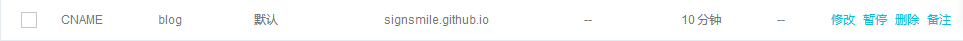

在github pages上搭建博客
Tue 05 December 2017
在上传Pelican生成的静态网站的时候发现绑定的域名没法访问， 上网一搜是因为缺少CNAME文件的配置，于是决定罗列下github上搭建博客的步骤，以备查询
-
首先得有个github账号，账号申请就不说了，github传送门
-
注册账号后新建一个仓库(repository)
这里需要特别留意的是仓库的名字必须以{username}.github.io命名，{username}用自己github的账户名替换

-
github上的仓库创建好以后同时也需要在本地创建个仓库以便维护，github会提供操作方法，命令行上照做即可。
echo "# signsmile.github.io" >> README.md git init git add README.md git commit -m "first commit" git remote add origin > https://github.com/signsmile/signsmile.github.io.git git push -u origin master
这里需要事先设置好ssh公钥私钥，以便获得push的权限。当然也可以在每次push的时候输入账户密码
$ git push -u origin master Username for 'https://github.com': signsmile

-
有了仓库以后就可以把整个静态网站放到仓库中去了，比如用Pelican生成的output目录就可以直接上传上去，在这里作为例子，新建一个index.html文件
<html> <head> <title>github pages test</title> </head> <body> <h1>Hello World!</h1> this is the test index.html file for github pages </body> </html>
把index.html文件放在本地仓库，然后
git push上传到github，这样github pages就可以访问了
访问地址为{username}.github.io

-
如果手头有个域名，可以将自己的域名指向github pages, 配置如下

同时github仓库的根目录下需要放一个CNAME文件，文件内填入将设置的域名，比如blog.signsmile.com
至此，github pages上的blog已经搭建完成了，后续只需将更新的静态网站放到仓库目录下面然后push就行